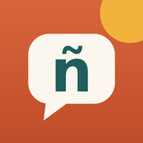

<!doctype html>
<html lang="en">
<head>
<meta charset="utf-8">
<meta name="viewport" content="width=device-width, initial-scale=1, viewport-fit=cover">
<title>Hablemos — Conversational Spanish</title>
<meta name="description" content="Learn to speak and understand conversational Spanish, a few minutes a day.">
<meta name="theme-color" content="#D9653B">
<link rel="manifest" href="manifest.webmanifest">
<link rel="icon" type="image/png" sizes="32x32" href="favicon-32.png">
<link rel="icon" href="favicon.ico" sizes="any">
<link rel="apple-touch-icon" sizes="180x180" href="apple-touch-icon.png">
<meta name="apple-mobile-web-app-capable" content="yes">
<meta name="mobile-web-app-capable" content="yes">
<meta name="apple-mobile-web-app-status-bar-style" content="default">
<meta name="apple-mobile-web-app-title" content="Hablemos">
<link rel="preconnect" href="https://fonts.googleapis.com">
<link rel="preconnect" href="https://fonts.gstatic.com" crossorigin>
<link href="https://fonts.googleapis.com/css2?family=DM+Sans:opsz,wght@9..40,400;9..40,500;9..40,700&family=Fraunces:opsz,wght@9..144,600;9..144,700&display=swap" rel="stylesheet">
<style>
:root{
  --bg:#FBF6EE;--surface:#FFFFFF;--surface2:#F4EDE1;--ink:#1F2A2E;--muted:#6B726F;--line:#E7DDCD;
  --accent:#D9653B;--accent-soft:#FBE3D7;--on-accent:#FFFFFF;--teal:#1F5E5B;--teal-soft:#DCEBE8;
  --sun:#F2B33D;--good:#2E7D5B;--good-soft:#DDF0E6;--bad:#C4472D;--bad-soft:#F8DFD7;
  --shadow:0 1px 2px rgba(31,42,46,.05),0 6px 20px rgba(31,42,46,.06);
  --r:18px;--display:"Fraunces",Georgia,"Times New Roman",serif;--body:"DM Sans",-apple-system,BlinkMacSystemFont,"Segoe UI",Roboto,sans-serif;
}
@media (prefers-color-scheme:dark){:root{
  --bg:#111617;--surface:#1A2123;--surface2:#222A2D;--ink:#F1EBE1;--muted:#9AA3A0;--line:#2D3638;
  --accent:#EA7A50;--accent-soft:#3A2419;--on-accent:#1A0F0A;--teal:#6CC0B8;--teal-soft:#183230;
  --good:#5CBF91;--good-soft:#173328;--bad:#EE7458;--bad-soft:#3B1F18;--shadow:none;
}}
*{box-sizing:border-box;-webkit-tap-highlight-color:transparent}
html,body{margin:0;background:var(--bg);color:var(--ink);font-family:var(--body);font-size:16px;line-height:1.45}
body{min-height:100vh;min-height:100dvh}
button{font:inherit;color:inherit;border:0;background:none;cursor:pointer;touch-action:manipulation}
h1,h2,h3{font-family:var(--display);font-weight:700;letter-spacing:-.01em;margin:0}
#app{max-width:540px;margin:0 auto;min-height:100dvh;position:relative}
.screen{padding:calc(env(safe-area-inset-top) + 18px) 16px calc(env(safe-area-inset-bottom) + 96px)}
.hello{display:flex;align-items:flex-start;justify-content:space-between;gap:12px;margin:6px 0 18px}
.hello h1{font-size:30px;line-height:1.1}
.hello small{display:block;color:var(--muted);font-size:14px;margin-top:4px}
.pill{display:inline-flex;align-items:center;gap:6px;background:var(--surface);border:1px solid var(--line);border-radius:999px;padding:6px 12px;font-weight:700;font-size:14px;white-space:nowrap}
.pill .flame{color:var(--accent)}
.card{background:var(--surface);border:1px solid var(--line);border-radius:var(--r);padding:18px;box-shadow:var(--shadow);margin-bottom:14px}
.hero{background:var(--teal);color:#fff;border:0;position:relative;overflow:hidden}
@media (prefers-color-scheme:dark){.hero{background:#1D4744}}
.hero h2{font-size:24px;margin-bottom:4px}
.hero p{margin:0 0 16px;opacity:.85;padding-right:40px}
.hero h2{padding-right:44px}
.hero .sun{position:absolute;right:-38px;top:-38px;width:96px;height:96px;border-radius:50%;background:var(--sun);opacity:.9}
.hero .meta{display:flex;gap:8px;flex-wrap:wrap;margin-bottom:16px;position:relative}
.hero .meta span{background:rgba(255,255,255,.14);border-radius:999px;padding:4px 10px;font-size:13px;font-weight:500}
.btn{display:flex;align-items:center;justify-content:center;gap:8px;width:100%;min-height:52px;border-radius:14px;font-weight:700;font-size:17px;padding:12px 18px;transition:transform .08s}
.btn:active{transform:scale(.98)}
.btn-primary{background:var(--accent);color:var(--on-accent)}
.btn-light{background:#fff;color:#1F5E5B}
.btn-soft{background:var(--surface2);color:var(--ink)}
.btn-ghost{background:transparent;border:1.5px solid var(--line)}
.btn[disabled]{opacity:.45}
.row{display:flex;gap:10px}
.row>*{flex:1}
.label{font-size:12px;letter-spacing:.08em;text-transform:uppercase;color:var(--muted);font-weight:700;margin:22px 4px 10px}
.list-item{display:flex;align-items:center;gap:14px;padding:14px;background:var(--surface);border:1px solid var(--line);border-radius:16px;margin-bottom:10px;width:100%;text-align:left}
.list-item .num{flex:none;width:40px;height:40px;border-radius:12px;display:grid;place-items:center;font-family:var(--display);font-weight:700;background:var(--accent-soft);color:var(--accent);font-size:18px}
.list-item .num.done{background:var(--good-soft);color:var(--good)}
.list-item .grow{flex:1;min-width:0}
.list-item .t{font-weight:700}
.list-item .s{color:var(--muted);font-size:14px;white-space:nowrap;overflow:hidden;text-overflow:ellipsis}
.list-item .chev{color:var(--muted);flex:none}
.mini{height:5px;background:var(--surface2);border-radius:9px;margin-top:8px;overflow:hidden}
.mini i{display:block;height:100%;background:var(--good);border-radius:9px}
.top{display:flex;align-items:center;gap:8px;margin:0 0 12px}
.top h1{font-size:26px}
.icon-btn{width:44px;height:44px;border-radius:12px;display:grid;place-items:center;flex:none}
.icon-btn:active{background:var(--surface2)}
.icon-btn svg,.btn svg{width:22px;height:22px}
.tip{background:var(--accent-soft);border-radius:16px;padding:14px 16px;margin-bottom:16px;font-size:15px}
.tip b{color:var(--accent)}
.phrase{display:flex;align-items:center;gap:12px;padding:12px 4px;border-bottom:1px solid var(--line);width:100%;text-align:left}
.phrase:last-child{border-bottom:0}
.phrase .es{font-weight:700}
.phrase .en{color:var(--muted);font-size:14px}
.phrase .play{flex:none;width:38px;height:38px;border-radius:50%;background:var(--teal-soft);color:var(--teal);display:grid;place-items:center}
.phrase .play svg{width:18px;height:18px}
.dot{width:8px;height:8px;border-radius:50%;background:var(--line);flex:none}
.dot.on{background:var(--good)}
.tabbar{position:fixed;left:0;right:0;bottom:0;z-index:5;background:color-mix(in srgb,var(--bg) 88%,transparent);backdrop-filter:blur(14px);-webkit-backdrop-filter:blur(14px);border-top:1px solid var(--line);padding-bottom:env(safe-area-inset-bottom)}
.tabbar nav{max-width:540px;margin:0 auto;display:flex}
.tabbar button{flex:1;display:flex;flex-direction:column;align-items:center;gap:2px;padding:10px 0 8px;font-size:12px;font-weight:500;color:var(--muted)}
.tabbar button svg{width:24px;height:24px}
.tabbar button.on{color:var(--accent)}
/* session */
.session{min-height:100dvh;display:flex;flex-direction:column;padding:calc(env(safe-area-inset-top) + 8px) 16px calc(env(safe-area-inset-bottom) + 14px)}
.sbar{display:flex;align-items:center;gap:10px}
.pbar{flex:1;height:8px;background:var(--surface2);border-radius:9px;overflow:hidden}
.pbar i{display:block;height:100%;background:var(--accent);border-radius:9px;transition:width .3s}
.count{font-size:13px;color:var(--muted);font-weight:700;min-width:42px;text-align:right}
.stage{flex:1;display:flex;flex-direction:column;justify-content:center;padding:18px 4px;gap:14px}
.tag{align-self:flex-start;font-size:12px;letter-spacing:.08em;text-transform:uppercase;font-weight:700;padding:5px 10px;border-radius:999px;background:var(--teal-soft);color:var(--teal)}
.tag.new{background:var(--accent-soft);color:var(--accent)}
.big-es{font-family:var(--display);font-size:clamp(28px,8.5vw,38px);line-height:1.15;font-weight:700}
.big-en{font-family:var(--display);font-size:clamp(24px,7vw,32px);line-height:1.2;font-weight:600}
.sub-en{color:var(--muted);font-size:18px}
.how{color:var(--muted);font-size:14px}
.note{background:var(--surface);border:1px solid var(--line);border-radius:14px;padding:12px 14px;font-size:14px}
.note b{color:var(--teal)}
.ctrls{display:flex;gap:10px;flex-wrap:wrap}
.ctrl{display:flex;align-items:center;gap:8px;padding:10px 16px;min-height:46px;border-radius:999px;background:var(--surface);border:1.5px solid var(--line);font-weight:700;font-size:15px}
.ctrl svg{width:20px;height:20px}
.ctrl.mic{background:var(--accent);color:var(--on-accent);border-color:var(--accent)}
.ctrl.mic.rec{animation:pulse 1.1s infinite}
@keyframes pulse{0%{box-shadow:0 0 0 0 color-mix(in srgb,var(--accent) 55%,transparent)}100%{box-shadow:0 0 0 16px transparent}}
.bigplay{width:120px;height:120px;border-radius:50%;background:var(--teal);color:#fff;display:grid;place-items:center;align-self:center;margin:10px 0}
.bigplay svg{width:48px;height:48px}
.answer{border-top:1.5px dashed var(--line);padding-top:16px;display:flex;flex-direction:column;gap:8px}
.fb{font-size:15px;border-radius:14px;padding:12px 14px;display:none}
.fb.show{display:block}
.fb.good{background:var(--good-soft)} .fb.mid{background:#FFF3D6} .fb.low{background:var(--bad-soft)} .fb.info{background:var(--surface2)}
@media (prefers-color-scheme:dark){.fb.mid{background:#3A3018}}
.fb .w{font-weight:700;margin-right:4px}
.fb .w.hit{color:var(--good)} .fb .w.miss{color:var(--bad);text-decoration:underline dotted}
.fb .said{color:var(--muted);font-size:13px;margin-top:6px}
.grades{display:grid;grid-template-columns:repeat(4,1fr);gap:8px}
.grade{border-radius:14px;padding:10px 4px;min-height:60px;font-weight:700;font-size:15px;display:flex;flex-direction:column;align-items:center;justify-content:center;background:var(--surface);border:1.5px solid var(--line)}
.grade small{font-weight:500;color:var(--muted);font-size:12px}
.grade.g0{color:var(--bad)} .grade.g2{background:var(--good-soft);border-color:transparent;color:var(--good)}
.sfoot{display:flex;flex-direction:column;gap:10px}
.done-wrap{text-align:center;align-items:center}
.done-wrap h2{font-size:34px}
.stats{display:grid;grid-template-columns:repeat(3,1fr);gap:10px;width:100%}
.stat{background:var(--surface);border:1px solid var(--line);border-radius:16px;padding:14px 6px;text-align:center}
.stat b{display:block;font-family:var(--display);font-size:28px}
.stat span{font-size:12px;color:var(--muted)}
/* dialogue */
.bubbles{display:flex;flex-direction:column;gap:10px;margin:8px 0 18px}
.bub{max-width:86%;padding:10px 14px;border-radius:18px;background:var(--surface);border:1px solid var(--line);text-align:left;transition:box-shadow .2s,transform .2s}
.bub.b{align-self:flex-end;background:var(--teal-soft);border-color:transparent}
.bub .who{font-size:12px;font-weight:700;color:var(--muted);margin-bottom:2px}
.bub .es{font-weight:500;font-size:17px}
.bub .en{color:var(--muted);font-size:14px;margin-top:2px}
.bub.now{box-shadow:0 0 0 2.5px var(--accent);transform:scale(1.01)}
.bub.mine{background:var(--accent-soft);border:1.5px dashed var(--accent)}
.bub.mine .ctrls{margin-top:10px}
.scene{color:var(--muted);font-size:14px;margin:-4px 0 12px}
.toggles{display:flex;gap:8px;flex-wrap:wrap;margin-bottom:6px}
.chip{padding:8px 14px;border-radius:999px;border:1.5px solid var(--line);font-weight:700;font-size:14px;background:var(--surface)}
.chip.on{background:var(--ink);color:var(--bg);border-color:var(--ink)}
.dock{position:sticky;bottom:calc(env(safe-area-inset-bottom) + 70px);display:flex;gap:10px;padding:18px 0 6px;background:linear-gradient(to bottom,transparent,var(--bg) 40%)}
/* me */
.grid3{display:grid;grid-template-columns:repeat(3,1fr);gap:10px}
.week{display:flex;align-items:flex-end;gap:8px;height:110px;padding-top:8px}
.week .col{flex:1;display:flex;flex-direction:column;align-items:center;gap:6px;height:100%;justify-content:flex-end}
.week .bar{width:100%;max-width:28px;border-radius:8px 8px 4px 4px;background:var(--accent);min-height:4px}
.week .bar.zero{background:var(--surface2)}
.week .d{font-size:12px;color:var(--muted)}
details.m{background:var(--surface);border:1px solid var(--line);border-radius:14px;margin-bottom:8px;padding:0 14px}
details.m summary{padding:14px 0;font-weight:700;cursor:pointer;list-style:none;display:flex;justify-content:space-between;gap:10px}
details.m summary::-webkit-details-marker{display:none}
details.m summary::after{content:"+";color:var(--muted);font-weight:500}
details.m[open] summary::after{content:"–"}
details.m p{margin:0 0 14px;color:var(--muted);font-size:15px}
.seg{display:flex;background:var(--surface2);border-radius:12px;padding:4px;gap:4px}
.seg button{flex:1;padding:10px 6px;border-radius:9px;font-weight:700;font-size:14px;color:var(--muted)}
.seg button.on{background:var(--surface);color:var(--ink);box-shadow:var(--shadow)}
.set{margin-bottom:18px}
.set>.k{font-weight:700;margin-bottom:8px;display:flex;justify-content:space-between}
.set>.k span{color:var(--muted);font-weight:500}
select,input[type=range]{width:100%}
select{font:inherit;padding:12px;border-radius:12px;border:1.5px solid var(--line);background:var(--surface);color:var(--ink)}
input[type=range]{accent-color:var(--accent);height:30px}
.warn{background:var(--bad-soft);border-radius:12px;padding:12px 14px;font-size:14px;margin-bottom:12px}
.muted{color:var(--muted)}
.toast{position:fixed;left:50%;bottom:calc(env(safe-area-inset-bottom) + 90px);transform:translateX(-50%);background:var(--ink);color:var(--bg);padding:10px 16px;border-radius:12px;font-weight:500;font-size:14px;z-index:20;opacity:0;transition:opacity .2s;pointer-events:none;max-width:90vw;text-align:center}
.toast.show{opacity:1}
/* onboarding */
.ob{min-height:100dvh;display:flex;flex-direction:column;padding:calc(env(safe-area-inset-top) + 28px) 20px calc(env(safe-area-inset-bottom) + 20px);gap:18px}
.ob .logo{width:76px;height:76px;border-radius:22px}
.ob h1{font-size:36px;line-height:1.05}
.ob p{margin:0;color:var(--muted)}
.ob .grow{flex:1}
@media (prefers-reduced-motion:reduce){*{transition:none!important;animation:none!important}}
</style>
</head>
<body>
<div id="app"></div>
<div class="toast" id="toast"></div>
<script>
"use strict";
/* ---------------- CONTENT ----------------
   Each unit: high-frequency chunks natives actually say, one grammar "key" in plain words,
   and a short dialogue built from those chunks (comprehensible input). */
const UNITS=[
{id:"u1",title:"Hola",sub:"Greetings & meeting people",
 tip:"<b>Sound tip:</b> Spanish has five pure vowels — a (ah), e (eh), i (ee), o (oh), u (oo). Keep them short and crisp; don't glide them like English “oh-oo”. Spelling = sound.",
 p:[["Hola, ¿cómo estás?","Hi, how are you?","<b>tú</b> form (friends, peers). With strangers or older people: ¿Cómo está usted?"],
    ["Bien, gracias. ¿Y tú?","Good, thanks. And you?"],
    ["¿Cómo te llamas?","What's your name?","Literally: “What do you call yourself?”"],
    ["Me llamo Carlos.","My name is Carlos.","Swap in your own name when you say it out loud."],
    ["Mucho gusto.","Nice to meet you.","The classic reply is <b>Igualmente</b> — likewise."],
    ["¿De dónde eres?","Where are you from?"],
    ["Soy de Estados Unidos.","I'm from the United States."],
    ["Hasta luego.","See you later.","Used for any goodbye — even if you may not see them again soon."]],
 d:{title:"At a friend's party",a:"Ana",b:"Tom",l:[
  ["A","Hola, ¿cómo estás?","Hi, how are you?"],["B","Bien, gracias. ¿Y tú?","Good, thanks. And you?"],
  ["A","Muy bien. Me llamo Ana. ¿Cómo te llamas?","Very good. My name is Ana. What's your name?"],
  ["B","Me llamo Tom. Mucho gusto.","My name is Tom. Nice to meet you."],
  ["A","Igualmente. ¿De dónde eres?","Likewise. Where are you from?"],
  ["B","Soy de Estados Unidos. ¿Y tú?","I'm from the United States. And you?"],
  ["A","Soy de México, de Guadalajara.","I'm from Mexico, from Guadalajara."],
  ["B","¡Qué bien! Bueno, hasta luego.","How nice! Well, see you later."],["A","¡Hasta luego!","See you later!"]]}},
{id:"u2",title:"Lifelines",sub:"Stay in Spanish when you're lost",
 tip:"<b>Why first:</b> Good learners don't avoid conversations — they steer them. These phrases keep a conversation going in Spanish instead of switching to English.",
 p:[["No entiendo.","I don't understand."],
    ["¿Puedes repetir, por favor?","Can you repeat, please?"],
    ["Más despacio, por favor.","Slower, please.","Natives speak fast. Asking for this is normal and polite."],
    ["¿Cómo se dice “window” en español?","How do you say “window” in Spanish?","Your most powerful tool: pull any word you need out of a native speaker."],
    ["¿Qué significa eso?","What does that mean?"],
    ["Hablo un poco de español.","I speak a little Spanish."],
    ["Estoy aprendiendo español.","I'm learning Spanish.","People get patient and encouraging when they hear this."],
    ["¿Hablas inglés?","Do you speak English?","Save it for emergencies!"]],
 d:{title:"In a shop",a:"Luis",b:"Tom",l:[
  ["A","Buenas tardes. ¿Qué estás buscando?","Good afternoon. What are you looking for?"],
  ["B","Perdón, no entiendo. Hablo un poco de español.","Sorry, I don't understand. I speak a little Spanish."],
  ["A","No hay problema. ¿Qué estás buscando?","No problem. What are you looking for?"],
  ["B","Más despacio, por favor. ¿Qué significa “buscando”?","Slower, please. What does “buscando” mean?"],
  ["A","Significa “looking for”.","It means “looking for”."],
  ["B","¡Ah, gracias! Busco un regalo para mi hijo.","Ah, thanks! I'm looking for a gift for my son."],
  ["A","¡Claro! Por aquí, por favor.","Of course! This way, please."]]}},
{id:"u3",title:"Quiero & Necesito",sub:"The helper-verb hack",
 tip:"<b>The key:</b> learn a helper verb, then plug in any verb in its dictionary form (ending in -ar, -er, -ir). <b>Quiero</b> + comer = I want to eat. <b>Necesito</b> + trabajar = I need to work. A few helpers unlock hundreds of sentences.",
 p:[["Quiero un café, por favor.","I'd like a coffee, please.","Quiero is completely normal when ordering — not rude."],
    ["Quiero aprender español.","I want to learn Spanish."],
    ["Necesito ayuda.","I need help."],
    ["Necesito hablar contigo.","I need to talk with you.","con + ti = <b>contigo</b>; con + mí = <b>conmigo</b>."],
    ["¿Quieres ir conmigo?","Do you want to go with me?"],
    ["No quiero trabajar hoy.","I don't want to work today.","To make anything negative, put <b>no</b> in front of the verb."],
    ["¿Qué quieres hacer?","What do you want to do?"],
    ["Necesito descansar.","I need to rest."]],
 d:{title:"Plans for tonight",a:"Sofía",b:"Tom",l:[
  ["A","¿Qué quieres hacer hoy?","What do you want to do today?"],
  ["B","No sé. Necesito descansar un poco.","I don't know. I need to rest a little."],
  ["A","¿Quieres ir al cine conmigo?","Do you want to go to the movies with me?"],
  ["B","Sí, quiero ver una película.","Yes, I want to see a movie."],
  ["A","¡Perfecto! ¿Quieres cenar antes?","Perfect! Do you want to have dinner before?"],
  ["B","No, necesito ahorrar dinero.","No, I need to save money."],
  ["A","Está bien. Nos vemos a las siete.","OK. See you at seven."]]}},
{id:"u4",title:"Puedo & ¿Puedes?",sub:"Asking for things politely",
 tip:"<b>The key:</b> <b>Puedo</b> = I can. <b>¿Puedes…?</b> = can you…? <b>¿Puede…?</b> = can you (polite, usted). Same trick: + any verb in dictionary form.",
 p:[["¿Puedo pagar con tarjeta?","Can I pay by card?"],
    ["¿Puedes ayudarme?","Can you help me?","Pronouns can attach to the end: ayudar + me = <b>ayudarme</b>."],
    ["No puedo ir hoy.","I can't go today."],
    ["¿Me puedes dar la cuenta?","Can you give me the check?"],
    ["¿Se puede estacionar aquí?","Can you park here?","<b>¿Se puede…?</b> = “Is it allowed / can one…?” Works for anything."],
    ["Puedo hablar un poco.","I can speak a little."],
    ["¿Puedo hacer una pregunta?","Can I ask a question?"],
    ["Claro que sí.","Of course."]],
 d:{title:"At the hotel",a:"Recepcionista",b:"Tom",l:[
  ["A","Buenas noches. ¿En qué le puedo ayudar?","Good evening. How can I help you?"],
  ["B","Hola. ¿Puedo dejar mi maleta aquí?","Hi. Can I leave my suitcase here?"],
  ["A","Claro que sí.","Of course."],
  ["B","Gracias. ¿Se puede estacionar en la calle?","Thanks. Can you park on the street?"],
  ["A","No, pero puede usar nuestro estacionamiento.","No, but you can use our parking lot."],
  ["B","Perfecto. ¿Puedo pagar con tarjeta?","Perfect. Can I pay by card?"],
  ["A","Sí, por supuesto.","Yes, of course."]]}},
{id:"u5",title:"Voy a…",sub:"Plans — the easy future",
 tip:"<b>The key:</b> <b>voy a</b> + verb = I'm going to… (<b>vas a</b> = you're going to, <b>vamos a</b> = we're going to). Natives use this constantly — you can skip the formal future tense for a long time.",
 p:[["Voy a llamar a mi familia.","I'm going to call my family."],
    ["Vamos a comer.","Let's eat.","<b>Vamos a</b> means both “we're going to” and “let's”."],
    ["¿Qué vas a hacer este fin de semana?","What are you going to do this weekend?"],
    ["Voy a trabajar mañana.","I'm going to work tomorrow."],
    ["Vamos a ver.","We'll see. / Let's see."],
    ["¿A qué hora vas a llegar?","What time are you going to arrive?"],
    ["Voy a estar en casa.","I'm going to be at home."],
    ["Va a llover.","It's going to rain."]],
 d:{title:"The weekend",a:"Marta",b:"Tom",l:[
  ["A","¿Qué vas a hacer este fin de semana?","What are you going to do this weekend?"],
  ["B","Voy a trabajar el sábado.","I'm going to work on Saturday."],
  ["A","¿Y el domingo?","And on Sunday?"],
  ["B","Vamos a visitar a mis padres.","We're going to visit my parents."],
  ["A","¡Qué bien! Dicen que va a llover.","Nice! They say it's going to rain."],
  ["B","Entonces vamos a estar en casa.","Then we're going to be at home."],
  ["A","Vamos a ver.","We'll see."]]}},
{id:"u6",title:"Tengo & Tengo que",sub:"Have, and have to",
 tip:"<b>The key:</b> <b>tengo</b> = I have. <b>tengo que</b> + verb = I have to. Spanish also “has” hunger, thirst, and age: tengo hambre, tengo sed, tengo cuarenta años.",
 p:[["Tengo hambre.","I'm hungry.","Literally “I have hunger”. Also: tengo sed (thirsty), tengo frío (cold)."],
    ["Tengo que irme.","I have to go."],
    ["Tengo que trabajar mañana.","I have to work tomorrow."],
    ["¿Tienes tiempo?","Do you have time?"],
    ["No tengo idea.","I have no idea."],
    ["Tengo prisa.","I'm in a hurry."],
    ["¿Tienes hijos?","Do you have kids?"],
    ["Sí, tengo dos hijos.","Yes, I have two kids.","<b>hijos</b> = kids/children (sons, or sons and daughters)."]],
 d:{title:"In a hurry",a:"Carlos",b:"Tom",l:[
  ["A","¿Tienes tiempo para un café?","Do you have time for a coffee?"],
  ["B","Lo siento, tengo prisa. Tengo que irme.","Sorry, I'm in a hurry. I have to go."],
  ["A","¿Tienes que trabajar?","Do you have to work?"],
  ["B","No, tengo que recoger a mis hijos.","No, I have to pick up my kids."],
  ["A","¿Tienes hijos? ¡No tenía idea!","You have kids? I had no idea!"],
  ["B","Sí, tengo dos. ¡Hasta mañana!","Yes, I have two. See you tomorrow!"]]}},
{id:"u7",title:"Me gusta",sub:"Likes & small talk",
 tip:"<b>The key:</b> <b>me gusta</b> = “it pleases me”. Use <b>gusta</b> for one thing or an action, <b>gustan</b> for plural things. Agree with <b>a mí también</b> (me too) or <b>a mí tampoco</b> (me neither).",
 p:[["Me gusta mucho.","I like it a lot."],
    ["No me gusta el café.","I don't like coffee."],
    ["¿Te gusta tu trabajo?","Do you like your job?"],
    ["Me gustan los tacos.","I like tacos.","Plural thing → <b>gustan</b>."],
    ["Me encanta esta ciudad.","I love this city.","<b>Me encanta</b> = I love it (for things, food, places)."],
    ["¿Qué te gusta hacer?","What do you like to do?"],
    ["Me gusta pasar tiempo con mi familia.","I like spending time with my family."],
    ["A mí también.","Me too."]],
 d:{title:"Getting to know you",a:"Elena",b:"Tom",l:[
  ["A","¿Te gusta tu trabajo?","Do you like your job?"],
  ["B","Sí, me gusta mucho. ¿Y a ti?","Yes, I like it a lot. And you?"],
  ["A","Más o menos. ¿Qué te gusta hacer los fines de semana?","So-so. What do you like to do on weekends?"],
  ["B","Me gusta pasar tiempo con mi familia.","I like spending time with my family."],
  ["A","A mí también. ¿Te gustan los tacos?","Me too. Do you like tacos?"],
  ["B","¡Me encantan!","I love them!"]]}},
{id:"u8",title:"Preguntas",sub:"Where, when, how much, why",
 tip:"<b>The key:</b> question words carry accents — ¿<b>dónde</b>? ¿<b>cuándo</b>? ¿<b>cuánto</b>? ¿<b>por qué</b>? The answer “because” is <b>porque</b> (one word). Raise your voice at the end of yes/no questions.",
 p:[["¿Dónde está el baño?","Where is the bathroom?"],
    ["¿Cuánto cuesta?","How much does it cost?"],
    ["¿Cuándo es?","When is it?"],
    ["¿Por qué?","Why?"],
    ["Porque estoy cansado.","Because I'm tired.","A woman says <b>cansada</b>."],
    ["¿Qué hora es?","What time is it?"],
    ["¿Hay una farmacia cerca?","Is there a pharmacy nearby?","<b>¿Hay…?</b> = Is there / are there…? Super useful."],
    ["¿Cuál es tu número?","What's your number?"]],
 d:{title:"Finding a pharmacy",a:"Señora",b:"Tom",l:[
  ["B","Disculpe, ¿hay una farmacia cerca?","Excuse me, is there a pharmacy nearby?"],
  ["A","Sí, está a dos cuadras.","Yes, it's two blocks away."],
  ["B","¿Dónde exactamente?","Where exactly?"],
  ["A","Siga derecho y gire a la derecha.","Go straight and turn right."],
  ["B","¿Está abierta ahora?","Is it open now?"],
  ["A","Sí, cierra a las nueve.","Yes, it closes at nine."],
  ["B","Muchas gracias.","Thank you very much."],["A","De nada.","You're welcome."]]}},
{id:"u9",title:"En el restaurante",sub:"Ordering food & paying",
 tip:"<b>The key:</b> requests in the present tense sound natural and polite: <b>¿Me trae…?</b> (Will you bring me…?). Waiters usually use <b>usted</b> with you.",
 p:[["Una mesa para cuatro, por favor.","A table for four, please."],
    ["¿Qué me recomienda?","What do you recommend?"],
    ["Para mí, los tacos de pollo.","For me, the chicken tacos."],
    ["Sin cebolla, por favor.","Without onion, please.","<b>sin</b> = without, <b>con</b> = with."],
    ["¿Me trae agua, por favor?","Could you bring me water, please?"],
    ["Está delicioso.","It's delicious."],
    ["La cuenta, por favor.","The check, please."],
    ["¿Está incluida la propina?","Is the tip included?"]],
 d:{title:"Dinner out",a:"Mesero",b:"Tom",l:[
  ["A","Buenas noches. ¿Cuántos son?","Good evening. How many are you?"],
  ["B","Una mesa para cuatro, por favor.","A table for four, please."],
  ["A","Aquí tienen el menú.","Here's the menu."],
  ["B","¿Qué me recomienda?","What do you recommend?"],
  ["A","Los tacos de pollo son muy buenos.","The chicken tacos are very good."],
  ["B","Para mí, los tacos de pollo, sin cebolla.","For me, the chicken tacos, without onion."],
  ["A","¿Y para tomar?","And to drink?"],
  ["B","¿Me trae agua, por favor?","Could you bring me water, please?"]]}},
{id:"u10",title:"Ayer",sub:"Talking about the past",
 tip:"<b>The key:</b> learn past-tense verbs as chunks before rules: <b>fui</b> (I went), <b>hice</b> (I did), <b>comí</b> (I ate), <b>vi</b> (I saw), <b>estuve</b> (I was). Usage first, grammar later.",
 p:[["Ayer fui al supermercado.","Yesterday I went to the supermarket."],
    ["¿Qué hiciste el fin de semana?","What did you do on the weekend?"],
    ["No hice nada.","I didn't do anything.","Spanish uses a double negative: no… nada."],
    ["Comí con mis amigos.","I ate with my friends."],
    ["Estuve muy ocupado.","I was very busy.","A woman says <b>ocupada</b>."],
    ["Vi una película.","I watched a movie."],
    ["¿Cómo te fue?","How did it go?"],
    ["Me fue muy bien.","It went really well."]],
 d:{title:"Monday morning",a:"Diego",b:"Tom",l:[
  ["A","¿Cómo te fue el fin de semana?","How was your weekend?"],
  ["B","Me fue muy bien. ¿Y a ti?","It went really well. And you?"],
  ["A","Bien. ¿Qué hiciste?","Good. What did you do?"],
  ["B","El sábado comí con mis amigos y vi una película.","On Saturday I ate with my friends and watched a movie."],
  ["A","¡Qué bien! Yo no hice nada. Estuve muy cansado.","Nice! I didn't do anything. I was very tired."],
  ["B","A veces eso es lo mejor.","Sometimes that's the best thing."]]}},
{id:"u11",title:"Opiniones",sub:"Agreeing, reacting, feelings",
 tip:"<b>The key:</b> quick reactions make you sound engaged. <b>¡Qué…!</b> + adjective = How…! (¡Qué bueno! ¡Qué raro! ¡Qué lástima!). <b>Creo que…</b> = I think that…",
 p:[["Creo que sí.","I think so."],
    ["Creo que no.","I don't think so."],
    ["Me parece bien.","Sounds good to me."],
    ["Estoy de acuerdo.","I agree."],
    ["No estoy seguro.","I'm not sure.","A woman says <b>segura</b>."],
    ["¡Qué bueno!","That's great!"],
    ["¡Qué lástima!","What a shame!"],
    ["Estoy cansado, pero contento.","I'm tired, but happy."]],
 d:{title:"Making a plan",a:"Lucía",b:"Tom",l:[
  ["A","¿Vamos al parque mañana?","Shall we go to the park tomorrow?"],
  ["B","Creo que sí. ¿A qué hora?","I think so. What time?"],
  ["A","¿A las diez?","At ten?"],
  ["B","Me parece bien.","Sounds good to me."],
  ["A","Dicen que va a hacer frío.","They say it's going to be cold."],
  ["B","¡Qué lástima! Entonces no estoy seguro.","What a shame! Then I'm not sure."],
  ["A","Bueno, vamos a ver mañana.","Well, let's see tomorrow."]]}},
{id:"u12",title:"Suena natural",sub:"Fillers & connectors",
 tip:"<b>The key:</b> fillers buy you thinking time and make you sound fluent instead of frozen. Use <b>pues…</b> or <b>bueno…</b> where you'd say “um” or “well”.",
 p:[["Bueno…","Well… / OK…"],
    ["Pues…","Well… / So…","The Spanish “um”. Say it while you think."],
    ["O sea…","I mean…"],
    ["Entonces, ¿qué hacemos?","So, what do we do?"],
    ["¿En serio?","Really? / Seriously?"],
    ["¿Verdad?","Right?","Add it to the end of a sentence to check: Es fácil, ¿verdad?"],
    ["Es que…","The thing is…","Perfect for explaining or making an excuse."],
    ["No pasa nada.","No worries. / It's fine."]],
 d:{title:"Friday party",a:"Pablo",b:"Tom",l:[
  ["A","Oye, ¿vienes a la fiesta el viernes?","Hey, are you coming to the party on Friday?"],
  ["B","Pues… es que tengo que trabajar.","Well… the thing is I have to work."],
  ["A","¿En serio? ¿Hasta qué hora?","Seriously? Until what time?"],
  ["B","Hasta las ocho. O sea, puedo llegar tarde.","Until eight. I mean, I can arrive late."],
  ["A","¡No pasa nada! La fiesta empieza tarde, ¿verdad?","No worries! The party starts late, right?"],
  ["B","Bueno, entonces nos vemos allí.","OK, then see you there."]]}}
];
const ALL=[];const BYID={};
UNITS.forEach((u,ui)=>u.p.forEach((p,i)=>{const o={id:u.id+"-"+i,unit:u.id,ui,es:p[0],en:p[1],note:p[2]||""};ALL.push(o);BYID[o.id]=o;}));
const UBYID=Object.fromEntries(UNITS.map(u=>[u.id,u]));

/* ---------------- ICONS ---------------- */
const IC={
 play:'<svg viewBox="0 0 24 24" fill="currentColor"><path d="M8 5.5v13a1 1 0 0 0 1.5.86l10.4-6.5a1 1 0 0 0 0-1.72L9.5 4.64A1 1 0 0 0 8 5.5z"/></svg>',
 slow:'<svg viewBox="0 0 24 24" fill="none" stroke="currentColor" stroke-width="2" stroke-linecap="round"><path d="M3 15c0-4 3.5-7 8-7s8 3 8 7H3z"/><path d="M19 15h2l-1-3"/><path d="M6 15v3M16 15v3"/></svg>',
 mic:'<svg viewBox="0 0 24 24" fill="none" stroke="currentColor" stroke-width="2" stroke-linecap="round"><rect x="9" y="3" width="6" height="11" rx="3"/><path d="M5.5 11a6.5 6.5 0 0 0 13 0M12 17.5V21"/></svg>',
 eye:'<svg viewBox="0 0 24 24" fill="none" stroke="currentColor" stroke-width="2"><path d="M2 12s3.6-7 10-7 10 7 10 7-3.6 7-10 7S2 12 2 12z"/><circle cx="12" cy="12" r="3"/></svg>',
 x:'<svg viewBox="0 0 24 24" fill="none" stroke="currentColor" stroke-width="2.2" stroke-linecap="round"><path d="M6 6l12 12M18 6L6 18"/></svg>',
 back:'<svg viewBox="0 0 24 24" fill="none" stroke="currentColor" stroke-width="2.2" stroke-linecap="round" stroke-linejoin="round"><path d="M15 5l-7 7 7 7"/></svg>',
 chev:'<svg width="20" height="20" viewBox="0 0 24 24" fill="none" stroke="currentColor" stroke-width="2.2" stroke-linecap="round" stroke-linejoin="round"><path d="M9 5l7 7-7 7"/></svg>',
 stop:'<svg viewBox="0 0 24 24" fill="currentColor"><rect x="6" y="6" width="12" height="12" rx="2"/></svg>',
 home:'<svg viewBox="0 0 24 24" fill="none" stroke="currentColor" stroke-width="2" stroke-linejoin="round"><path d="M4 10.5L12 4l8 6.5V20a1 1 0 0 1-1 1h-4.5v-6h-5v6H5a1 1 0 0 1-1-1z"/></svg>',
 book:'<svg viewBox="0 0 24 24" fill="none" stroke="currentColor" stroke-width="2" stroke-linejoin="round"><path d="M4 5.5A2.5 2.5 0 0 1 6.5 3H20v15H6.5A2.5 2.5 0 0 0 4 20.5z"/><path d="M4 20.5A2.5 2.5 0 0 0 6.5 23H20v-5"/></svg>',
 ear:'<svg viewBox="0 0 24 24" fill="none" stroke="currentColor" stroke-width="2" stroke-linecap="round"><path d="M4 12a8 8 0 0 1 16 0v1a3 3 0 0 1-3 3h-1v-5h4M4 13a3 3 0 0 0 3 3h1v-5H4"/><path d="M8 16v1a4 4 0 0 0 4 4"/></svg>',
 me:'<svg viewBox="0 0 24 24" fill="none" stroke="currentColor" stroke-width="2"><circle cx="12" cy="8" r="4"/><path d="M4 21a8 8 0 0 1 16 0"/></svg>',
 bubble:'<svg viewBox="0 0 24 24" fill="none" stroke="currentColor" stroke-width="2" stroke-linejoin="round"><path d="M4 5h16v11H9l-5 4z"/></svg>'
};

/* ---------------- STORAGE ---------------- */
const KEY="hablemos.v1";
const DEF={settings:{accent:"latam",rate:0.9,newPerDay:5,voice:""},cards:{},streak:{n:0,last:""},hist:{},onboarded:false,doneDay:""};
function clone(o){return JSON.parse(JSON.stringify(o))}
function load(){try{const r=localStorage.getItem(KEY);if(r){const d=JSON.parse(r);return Object.assign(clone(DEF),d,{settings:Object.assign(clone(DEF.settings),d.settings||{})});}}catch(e){}return clone(DEF);}
let S=load();
function save(){try{localStorage.setItem(KEY,JSON.stringify(S));}catch(e){}}

/* ---------------- DATES ---------------- */
const DAY=864e5;
function dkey(d=new Date()){return d.getFullYear()+"-"+String(d.getMonth()+1).padStart(2,"0")+"-"+String(d.getDate()).padStart(2,"0");}
function sod(t=Date.now()){const d=new Date(t);d.setHours(0,0,0,0);return d.getTime();}
function hist(){const k=dkey();return S.hist[k]||(S.hist[k]={rev:0,learned:0,spoken:0});}
function markActive(){const t=dkey(),y=dkey(new Date(Date.now()-DAY));if(S.streak.last===t)return;S.streak.n=S.streak.last===y?S.streak.n+1:1;S.streak.last=t;}
function streakNow(){const t=dkey(),y=dkey(new Date(Date.now()-DAY));return(S.streak.last===t||S.streak.last===y)?S.streak.n:0;}

/* ---------------- SPEECH OUT ---------------- */
const TTS={ok:"speechSynthesis" in window,voices:[]};
let playTok=0;
function loadVoices(){if(!TTS.ok)return;TTS.voices=speechSynthesis.getVoices().filter(v=>/^es/i.test(v.lang));}
if(TTS.ok){loadVoices();speechSynthesis.addEventListener?speechSynthesis.addEventListener("voiceschanged",()=>{loadVoices();if(ui.view==="me")render();}):(speechSynthesis.onvoiceschanged=loadVoices);}
function prefs(){return S.settings.accent==="spain"?["es-es"]:["es-mx","es-us","es-419"];}
function rank(v){const L=v.lang.replace("_","-").toLowerCase();let s=0;const i=prefs().indexOf(L);if(i>=0)s+=100-i*10;else if(S.settings.accent==="spain"?false:L!=="es-es")s+=30;
 if(/premium|enhanced|natural|neural|siri/i.test(v.name))s+=15;if(/google/i.test(v.name))s+=8;return s;}
function ranked(){return TTS.voices.slice().sort((a,b)=>rank(b)-rank(a));}
function mainVoice(){if(S.settings.voice){const v=TTS.voices.find(v=>v.name===S.settings.voice);if(v)return v;}return ranked()[0]||null;}
function altVoice(){const m=mainVoice();if(!m)return null;const pre=m.lang.slice(0,2);return ranked().find(v=>v.name!==m.name&&rank(v)>=rank(m)-20&&v.lang.slice(0,2)===pre)||m;}
function speak(text,o={}){return new Promise(res=>{
 if(!TTS.ok){res();return;}
 speechSynthesis.cancel();
 const u=new SpeechSynthesisUtterance(text.replace(/[“”]/g,""));
 const v=o.alt?altVoice():mainVoice();
 if(v){u.voice=v;u.lang=v.lang;}else u.lang=S.settings.accent==="spain"?"es-ES":"es-MX";
 u.rate=o.rate||S.settings.rate;u.pitch=o.pitch||1;
 let done=false;const fin=()=>{if(!done){done=true;clearTimeout(t);res();}};
 u.onend=fin;u.onerror=fin;const t=setTimeout(fin,1500+text.length*100/u.rate);
 speechSynthesis.speak(u);});}
function stopAudio(){playTok++;if(TTS.ok)speechSynthesis.cancel();}
function stopAll(){stopAudio();if(typeof listenStop==="function")listenStop();}
const sleep=ms=>new Promise(r=>setTimeout(r,ms));

/* ---------------- SPEECH IN ---------------- */
const SR=window.SpeechRecognition||window.webkitSpeechRecognition;
/* iOS Safari often never fires "onend" after you finish speaking, so we never wait on it alone:
   - stop after ~1.4s of silence once words are heard
   - stop as soon as a final result arrives
   - hard stop after 8s no matter what
   - tapping the mic again stops it (listenStop) */
let rec=null,listenStop=null;
function listen(){return new Promise((res,rej)=>{
 if(listenStop)listenStop();
 const r=new SR();rec=r;r.lang=S.settings.accent==="spain"?"es-ES":"es-MX";r.interimResults=true;r.maxAlternatives=5;r.continuous=false;
 let got=[],settled=false,quiet=null;
 const finish=err=>{if(settled)return;settled=true;clearTimeout(hard);clearTimeout(quiet);listenStop=null;rec=null;
  try{r.onresult=r.onerror=r.onend=null;r.abort();}catch(e){}
  if(err&&!got.length)rej(err);else res(got);};
 const hard=setTimeout(()=>finish(),8000);
 r.onresult=e=>{const last=e.results[e.results.length-1];
  const txt=Array.from(e.results).map(x=>x[0].transcript).join(" ").trim();
  got=last.isFinal?[txt,...Array.from(last).slice(1).map(a=>a.transcript)]:[txt];
  clearTimeout(quiet);
  if(last.isFinal)finish();else quiet=setTimeout(()=>finish(),1400);};
 r.onerror=e=>finish(e.error||"error");
 r.onend=()=>finish();
 listenStop=()=>finish();
 try{r.start();}catch(e){finish("start");}
});}
function norm(s){return s.toLowerCase().normalize("NFD").replace(/[̀-ͯ]/g,"").replace(/[^a-z0-9\s]/g," ").replace(/\s+/g," ").trim();}
function lev(a,b){const m=a.length,n=b.length,d=Array.from({length:m+1},(_,i)=>[i]);for(let j=1;j<=n;j++)d[0][j]=j;
 for(let i=1;i<=m;i++)for(let j=1;j<=n;j++)d[i][j]=Math.min(d[i-1][j]+1,d[i][j-1]+1,d[i-1][j-1]+(a[i-1]===b[j-1]?0:1));return d[m][n];}
function score(target,said){const a=norm(target).split(" ").filter(Boolean),b=norm(said).split(" ").filter(Boolean);
 if(target.includes("Carlos")&&b.length===a.length)b[b.length-1]="carlos";
 const w=1-lev(a,b)/Math.max(a.length,b.length,1);const c=1-lev(a.join(""),b.join(""))/Math.max(a.join("").length,1);
 return Math.max(0,Math.round(((w+c)/2)*100));}
function feedbackHTML(target,alts){
 let best=alts[0]||"",bs=-1;alts.forEach(a=>{const s=score(target,a);if(s>bs){bs=s;best=a;}});
 const said=new Set(norm(best).split(" "));
 const words=target.split(/\s+/).map(w=>{const n=norm(w);const hit=!n||said.has(n)||(/carlos/i.test(w));return`<span class="w ${hit?"hit":"miss"}">${esc(w)}</span>`;}).join(" ");
 const lvl=bs>=85?"good":bs>=60?"mid":"low";
 const msg=bs>=85?"¡Perfecto! ":bs>=60?"¡Casi! Almost — ":"Otra vez — try again. ";
 return{score:bs,cls:lvl,html:`<div><b>${msg}${bs}%</b></div><div style="margin-top:6px">${words}</div><div class="said">Heard: “${esc(best)}”</div>`};}
function micError(e){return e==="not-allowed"||e==="service-not-allowed"?"Microphone is blocked. Allow it in your browser settings — or just say it out loud and tap Show answer.":e==="no-speech"?"Didn't catch that. Tap the mic and speak right away.":"Speech recognition isn't available here. Say it out loud, then tap Show answer.";}

/* ---------------- SPACED REPETITION ---------------- */
function nextIvl(c,g){if(g===0)return 0;if(g===1)return c.reps===0?1:Math.max(c.ivl+1,Math.round(c.ivl*1.2));
 if(g===2)return c.reps===0?1:c.reps===1?3:Math.max(c.ivl+1,Math.round(c.ivl*c.ease));return c.reps===0?3:c.reps===1?5:Math.max(c.ivl+2,Math.round(c.ivl*c.ease*1.3));}
function ivlLabel(d){return d===0?"10 min":d<30?d+(d===1?" day":" days"):d<365?Math.round(d/30)+" mo":Math.round(d/365)+" yr";}
function applyGrade(id,g){const c=S.cards[id];if(!c)return;const iv=nextIvl(c,g);
 if(g===0){if(c.reps>0)c.lapses++;c.reps=0;c.ivl=0;c.ease=Math.max(1.3,c.ease-0.2);c.due=Date.now()+10*60e3;}
 else{if(g===1)c.ease=Math.max(1.3,c.ease-0.15);if(g===3)c.ease+=0.15;c.ivl=iv;c.reps++;c.due=sod()+iv*DAY+3*36e5;}}
function newCard(id){if(!S.cards[id]){S.cards[id]={due:Date.now(),ivl:0,ease:2.5,reps:0,lapses:0,seen:Date.now()};hist().learned++;markActive();}}
const isDue=p=>S.cards[p.id]&&S.cards[p.id].due<=Date.now();
const dueList=()=>ALL.filter(isDue).sort((a,b)=>S.cards[a.id].due-S.cards[b.id].due);
const unseen=()=>ALL.filter(p=>!S.cards[p.id]);
const newLeftToday=()=>Math.max(0,S.settings.newPerDay-(S.hist[dkey()]?.learned||0));
function revType(p){const c=S.cards[p.id];return(c.reps%3===1)?"listen":"recall";}

/* ---------------- UI STATE ---------------- */
const ui={view:S.onboarded?"today":"onboard",unit:null,dlg:null,from:"learn",session:null,dl:{en:false,playing:-1,rp:null}};
const esc=s=>String(s).replace(/[&<>"]/g,c=>({"&":"&amp;","<":"&lt;",">":"&gt;",'"':"&quot;"}[c]));
const $=s=>document.querySelector(s);
function toast(m){const t=$("#toast");t.textContent=m;t.classList.add("show");clearTimeout(toast.t);toast.t=setTimeout(()=>t.classList.remove("show"),2600);}

/* ---------------- SESSIONS ---------------- */
function startSession(mode,unitId,extra){
 let steps=[];
 if(mode==="daily"){
  const r=dueList().slice(0,25).map(p=>({t:revType(p),id:p.id}));
  const fresh=unseen().slice(0,extra||newLeftToday());
  steps.push(...r.splice(0,2));
  fresh.forEach((p,k)=>{steps.push({t:"intro",id:p.id});if(k>0)steps.push({t:"recall",id:fresh[k-1].id});if(r.length)steps.push(r.shift());});
  if(fresh.length)steps.push({t:"recall",id:fresh[fresh.length-1].id});
  steps.push(...r);
 }else if(mode==="learn"){
  const fresh=ALL.filter(p=>p.unit===unitId&&!S.cards[p.id]);
  fresh.forEach((p,k)=>{steps.push({t:"intro",id:p.id});if(k>0)steps.push({t:"recall",id:fresh[k-1].id});});
  if(fresh.length)steps.push({t:"recall",id:fresh[fresh.length-1].id});
 }else{
  const ps=ALL.filter(p=>p.unit===unitId).sort(()=>Math.random()-.5);
  ps.forEach((p,k)=>steps.push({t:k%3===2?"listen":"recall",id:p.id}));
 }
 if(!steps.length){toast("Nothing to do here right now.");return;}
 ui.session={mode,unitId,steps,i:0,revealed:false,fb:null,played:false,st:{learned:0,rev:0,spoken:0,again:0}};
 go("session");
}
function stepNext(){stopAll();const s=ui.session;s.i++;s.revealed=false;s.fb=null;s.played=false;
 if(s.i>=s.steps.length){if(s.mode==="daily")S.doneDay=dkey();save();}
 render();}

/* ---------------- VIEWS ---------------- */
function greet(){const h=new Date().getHours();return h<12?["Buenos días","Good morning"]:h<19?["Buenas tardes","Good afternoon"]:["Buenas noches","Good evening"];}
function nextUnit(){return UNITS.find(u=>ALL.some(p=>p.unit===u.id&&!S.cards[p.id]));}
function unitProg(u){const n=ALL.filter(p=>p.unit===u.id&&S.cards[p.id]).length;return[n,u.p.length];}
function tabbar(){const t=[["today","Today",IC.home],["learn","Learn",IC.book],["listen","Listen",IC.ear],["me","Progress",IC.me]];
 const act=ui.view==="unit"?"learn":ui.view==="dialog"?ui.from:ui.view;
 return`<div class="tabbar"><nav>${t.map(([v,l,i])=>`<button data-act="nav" data-arg="${v}" class="${act===v?"on":""}">${i}${l}</button>`).join("")}</nav></div>`;}

function vToday(){
 const [g,ge]=greet();const due=dueList().length;const nu=Math.min(newLeftToday(),unseen().length);
 const mins=Math.max(1,Math.ceil(Math.min(due,25)*0.3+nu*1.3));const doneToday=S.doneDay===dkey();
 const nx=nextUnit();const st=streakNow();
 let hero;
 if(due+nu>0){hero=`<div class="card hero"><div class="sun"></div><h2 style="position:relative">${doneToday?"A few more due":"Today's session"}</h2><p style="position:relative">Listen, repeat out loud, then recall.</p>
  <div class="meta">${due?`<span>${Math.min(due,25)} review${due===1?"":"s"}</span>`:""}${nu?`<span>${nu} new phrase${nu===1?"":"s"}</span>`:""}<span>~${mins} min</span></div>
  <button class="btn btn-light" data-act="daily">${doneToday?"Continue":"Empezar · Start"}</button></div>`;}
 else if(!unseen().length){hero=`<div class="card hero"><div class="sun"></div><h2 style="position:relative">¡Todo listo!</h2><p style="position:relative">You've learned every phrase. Keep reviewing and keep listening to the dialogues.</p></div>`;}
 else{hero=`<div class="card hero"><div class="sun"></div><h2 style="position:relative">¡Hecho! Done for today</h2><p style="position:relative">Your reviews are complete. Hungry for more?</p>
  <button class="btn btn-light" data-act="more">Learn 5 more phrases</button></div>`;}
 const dlgU=nx||UNITS[UNITS.length-1];
 return`<div class="screen">
 <div class="hello"><div><h1>${g}</h1><small>${ge} · ${new Date().toLocaleDateString(undefined,{weekday:"long",month:"short",day:"numeric"})}</small></div>
 <span class="pill"><span class="flame">●</span>${st} day${st===1?"":"s"}</span></div>
 ${hero}
 ${nx?`<div class="label">Up next</div>
 <button class="list-item" data-act="unit" data-arg="${nx.id}"><span class="num">${UNITS.indexOf(nx)+1}</span><span class="grow"><div class="t">${esc(nx.title)}</div><div class="s">${esc(nx.sub)}</div><div class="mini"><i style="width:${unitProg(nx)[0]/nx.p.length*100}%"></i></div></span><span class="chev">${IC.chev}</span></button>`:""}
 <div class="label">Listening practice</div>
 <button class="list-item" data-act="dlg" data-arg="${dlgU.id}" data-from="today"><span class="num" style="background:var(--teal-soft);color:var(--teal)">${IC.bubble.replace("<svg",'<svg width="20" height="20"')}</span><span class="grow"><div class="t">${esc(dlgU.d.title)}</div><div class="s">Dialogue · listen, then role-play</div></span><span class="chev">${IC.chev}</span></button>
 <div class="tip" style="margin-top:14px"><b>Today's habit:</b> say every phrase <b>out loud</b>, even when you're just reviewing. Speaking is a physical skill — your mouth needs the reps.</div>
 </div>${tabbar()}`;}

function vLearn(){return`<div class="screen"><div class="top"><h1>Learn</h1></div>
 <p class="muted" style="margin:-4px 0 16px">12 units of the phrases natives use most. Each has a key idea, 8 phrases and a real dialogue.</p>
 ${UNITS.map((u,i)=>{const[n,t]=unitProg(u);return`<button class="list-item" data-act="unit" data-arg="${u.id}"><span class="num ${n===t?"done":""}">${n===t?"✓":i+1}</span><span class="grow"><div class="t">${esc(u.title)}</div><div class="s">${esc(u.sub)}</div><div class="mini"><i style="width:${n/t*100}%"></i></div></span><span class="chev">${IC.chev}</span></button>`;}).join("")}
 </div>${tabbar()}`;}

function vUnit(){const u=UBYID[ui.unit];const[n,t]=unitProg(u);const left=t-n;
 return`<div class="screen"><div class="top"><button class="icon-btn" data-act="back" aria-label="Back">${IC.back}</button><h1>${esc(u.title)}</h1></div>
 <div class="tip">${u.tip}</div>
 <div class="row" style="margin-bottom:8px">${left?`<button class="btn btn-primary" data-act="learnunit" data-arg="${u.id}">Learn ${left} new</button>`:`<button class="btn btn-primary" data-act="practice" data-arg="${u.id}">Practice unit</button>`}
 <button class="btn btn-soft" data-act="dlg" data-arg="${u.id}" data-from="learn">Dialogue</button></div>
 <div class="label">Phrases · tap to hear</div>
 <div class="card" style="padding:4px 14px">${ALL.filter(p=>p.unit===u.id).map(p=>`<button class="phrase" data-act="say" data-arg="${p.id}"><span class="dot ${S.cards[p.id]?"on":""}"></span><span class="grow" style="flex:1"><div class="es">${esc(p.es)}</div><div class="en">${esc(p.en)}</div></span><span class="play">${IC.play}</span></button>`).join("")}</div>
 ${left&&n?`<button class="btn btn-ghost" data-act="practice" data-arg="${u.id}">Practice all 8 (no scheduling)</button>`:""}
 </div>${tabbar()}`;}

function vListen(){return`<div class="screen"><div class="top"><h1>Listen</h1></div>
 <div class="tip"><b>How to listen:</b> play it once without English and catch what you can. Then turn on English, replay, and finally role-play your part. Aim to understand most — not every — word.</div>
 ${UNITS.map((u,i)=>{const[n,t]=unitProg(u);return`<button class="list-item" data-act="dlg" data-arg="${u.id}" data-from="listen"><span class="num" style="background:var(--teal-soft);color:var(--teal)">${i+1}</span><span class="grow"><div class="t">${esc(u.d.title)}</div><div class="s">${esc(u.title)} · ${u.d.l.length} lines${n===t?" · ready":n?"":" · preview"}</div></span><span class="chev">${IC.chev}</span></button>`;}).join("")}
 </div>${tabbar()}`;}

function vDialog(){const u=UBYID[ui.dlg],d=u.d,dl=ui.dl,rp=dl.rp;
 const who=s=>s==="A"?d.a:d.b;
 let lines;
 if(rp){lines=d.l.slice(0,rp.i+1).map((L,i)=>{
   if(L[0]===rp.me&&i===rp.i&&!rp.done){return`<div class="bub mine ${L[0]==="B"?"b":""}"><div class="who">You (${esc(who(L[0]))})</div><div class="es">${rp.revealed?esc(L[1]):"<span class='muted'>Say in Spanish:</span>"}</div><div class="en" style="font-size:16px;color:var(--ink)">${esc(L[2])}</div>
     <div class="fb ${rp.fb?"show "+rp.fb.cls:""}" style="margin-top:8px">${rp.fb?rp.fb.html:""}</div>
     <div class="ctrls">${SR?`<button class="ctrl mic" data-act="rpmic">${IC.mic}Speak</button>`:""}${rp.revealed?`<button class="ctrl" data-act="rpnext">Continue</button>`:`<button class="ctrl" data-act="rpreveal">${IC.eye}Show</button>`}</div></div>`;}
   return`<div class="bub ${L[0]==="B"?"b":""} ${i===rp.i&&L[0]!==rp.me?"now":""}"><div class="who">${L[0]===rp.me?"You":esc(who(L[0]))}</div><div class="es">${esc(L[1])}</div>${dl.en?`<div class="en">${esc(L[2])}</div>`:""}</div>`;}).join("");
  if(rp.done)lines+=`<div class="card" style="text-align:center;margin-top:10px"><h2>¡Bien hecho!</h2><p class="muted">You held up your end of the conversation.</p><div class="row"><button class="btn btn-soft" data-act="rpstart" data-arg="${rp.me==="A"?"B":"A"}">Swap roles</button><button class="btn btn-primary" data-act="rpexit">Done</button></div></div>`;}
 else{lines=d.l.map((L,i)=>`<button class="bub ${L[0]==="B"?"b":""} ${dl.playing===i?"now":""}" data-act="line" data-arg="${i}"><div class="who">${esc(who(L[0]))}</div><div class="es">${esc(L[1])}</div>${dl.en?`<div class="en">${esc(L[2])}</div>`:""}</button>`).join("");}
 return`<div class="screen"><div class="top"><button class="icon-btn" data-act="back" aria-label="Back">${IC.back}</button><h1 style="font-size:23px">${esc(d.title)}</h1></div>
 <div class="scene">${esc(d.a)} & ${esc(d.b)} · Unit ${UNITS.indexOf(u)+1}: ${esc(u.title)}</div>
 <div class="toggles"><button class="chip ${dl.en?"on":""}" data-act="en">English</button><button class="chip ${S.settings.rate<0.8?"on":""}" data-act="slowtoggle">Slow</button>${rp?`<button class="chip" data-act="rpexit">Exit role-play</button>`:""}</div>
 <div class="bubbles">${lines}</div>
 ${rp?"":`<div class="dock">${dl.playing>=0?`<button class="btn btn-soft" data-act="stopdlg">${IC.stop}Stop</button>`:`<button class="btn btn-soft" data-act="playdlg">${IC.play}Play all</button>`}
 <button class="btn btn-primary" data-act="rpstart" data-arg="B">Role-play</button></div>`}
 </div>${tabbar()}`;}

function vMe(){const cards=Object.values(S.cards);const strong=cards.filter(c=>c.ivl>=21).length;const st=streakNow();
 const days=[...Array(7)].map((_,i)=>{const d=new Date(Date.now()-(6-i)*DAY);const h=S.hist[dkey(d)]||{};return{l:d.toLocaleDateString(undefined,{weekday:"narrow"}),v:(h.rev||0)+(h.learned||0)};});
 const mx=Math.max(5,...days.map(d=>d.v));const vs=ranked();const cur=mainVoice();
 return`<div class="screen"><div class="top"><h1>Progress</h1></div>
 <div class="grid3"><div class="stat"><b>${st}</b><span>day streak</span></div><div class="stat"><b>${cards.length}</b><span>phrases learned</span></div><div class="stat"><b>${strong}</b><span>long-term</span></div></div>
 <div class="card" style="margin-top:14px"><div style="font-weight:700">This week</div><div class="muted" style="font-size:13px">Phrases practiced per day</div>
 <div class="week">${days.map(d=>`<div class="col"><div class="bar ${d.v?"":"zero"}" style="height:${Math.max(4,d.v/mx*80)}px" title="${d.v}"></div><div class="d">${d.l}</div></div>`).join("")}</div></div>

 <div class="label">The method</div>
 ${[["Speak from day one","Every phrase is said out loud. Shadowing — repeating right after a native voice, copying rhythm and melody — is how interpreters and polyglots train pronunciation and fluency."],
    ["Chunks, not word lists","You learn whole phrases people actually say (high-frequency chunks). Grammar is introduced as one “key” per unit, then absorbed through use — the approach behind Michel Thomas and Pimsleur."],
    ["Active recall","You see English and produce the Spanish yourself before checking. Retrieving beats rereading — it's one of the most replicated findings in learning science."],
    ["Spaced repetition","Each phrase comes back right before you'd forget it: 1 day, 3 days, a week, a month… Rate yourself honestly so the schedule fits you."],
    ["Comprehensible input","Dialogues reuse phrases you know plus a few new ones, so you understand most of what you hear. Lots of understandable listening is what builds comprehension (Krashen)."],
    ["Little and daily","10–15 minutes every day beats an hour once a week. Protect the streak; skip a day, and just start again tomorrow."]]
   .map(([t,b])=>`<details class="m"><summary>${t}</summary><p>${b}</p></details>`).join("")}

 <div class="label">Settings</div>
 <div class="card">
 ${!TTS.ok?`<div class="warn">This browser can't speak. Try Safari on iPhone or Chrome on Android.</div>`:!vs.length?`<div class="warn"><b>No Spanish voice found.</b> On iPhone: Settings → Accessibility → Spoken Content → Voices → Spanish, and download one (Mexico “Paulina” or an Enhanced voice). On Android: Settings → Text-to-speech → install Spanish.</div>`:""}
 <div class="set"><div class="k">Accent</div><div class="seg"><button class="${S.settings.accent==="latam"?"on":""}" data-act="accent" data-arg="latam">Latin America</button><button class="${S.settings.accent==="spain"?"on":""}" data-act="accent" data-arg="spain">Spain</button></div></div>
 ${vs.length>1?`<div class="set"><div class="k">Voice</div><select id="voiceSel"><option value="">Best available${cur?" ("+esc(cur.name)+")":""}</option>${vs.map(v=>`<option value="${esc(v.name)}" ${S.settings.voice===v.name?"selected":""}>${esc(v.name)} · ${esc(v.lang)}</option>`).join("")}</select></div>`:""}
 <div class="set"><div class="k">Speaking speed <span id="rateLbl">${S.settings.rate.toFixed(2)}×</span></div><input type="range" id="rate" min="0.55" max="1.15" step="0.05" value="${S.settings.rate}"></div>
 <button class="btn btn-soft" data-act="testvoice" style="margin-bottom:18px">${IC.play}Test voice</button>
 <div class="set"><div class="k">New phrases per day</div><div class="seg">${[3,5,8,12].map(n=>`<button class="${S.settings.newPerDay===n?"on":""}" data-act="newper" data-arg="${n}">${n}</button>`).join("")}</div></div>
 <div class="muted" style="font-size:14px">Speech recognition: ${SR?"available — tap the mic to check your pronunciation.":"not available in this browser. You'll self-check instead (still works great)."}</div>
 </div>

 <div class="label">Your data</div>
 <div class="card"><p class="muted" style="margin:0 0 12px;font-size:14px">Progress is saved on this device only. Back it up to move it to another phone.</p>
 <div class="row"><button class="btn btn-soft" data-act="export">Back up</button><button class="btn btn-soft" data-act="import">Restore</button></div>
 <input type="file" id="importFile" accept="application/json,.json" hidden>
 <button class="btn btn-ghost" data-act="reset" style="margin-top:10px;color:var(--bad)">Reset all progress</button></div>
 <p class="muted" style="text-align:center;font-size:13px">Hablemos · Add to your home screen for the app experience.</p>
 </div>${tabbar()}`;}

function vOnboard(){const s=S.settings;return`<div class="ob">
 
 <h1>Hablemos.<br><span style="color:var(--accent)">Let's talk.</span></h1>
 <p>Learn to <b style="color:var(--ink)">speak and understand</b> everyday Spanish in about 10 minutes a day. You'll listen, repeat out loud, recall, and practice real conversations.</p>
 <div><div class="label" style="margin-top:6px">Which Spanish?</div><div class="seg"><button class="${s.accent==="latam"?"on":""}" data-act="accent" data-arg="latam">Latin America</button><button class="${s.accent==="spain"?"on":""}" data-act="accent" data-arg="spain">Spain</button></div></div>
 <div><div class="label">Daily pace</div><div class="seg">${[[3,"Easy"],[5,"Steady"],[8,"Serious"]].map(([n,l])=>`<button class="${s.newPerDay===n?"on":""}" data-act="newper" data-arg="${n}">${l}<br><small style="font-weight:500">${n} new/day</small></button>`).join("")}</div></div>
 <button class="btn btn-soft" data-act="testvoice">${IC.play}Test the sound</button>
 <div class="grow"></div>
 <button class="btn btn-primary" data-act="obdone">Empezar · Let's start</button>
 </div>`;}

function vSession(){const s=ui.session;const st=s.steps[s.i];
 if(!st)return vDone();
 const p=BYID[st.id];const pct=Math.round(s.i/s.steps.length*100);let body="",foot="";
 const ctrl=`<div class="ctrls"><button class="ctrl" data-act="say" data-arg="${p.id}">${IC.play}Play</button><button class="ctrl" data-act="sayslow" data-arg="${p.id}">${IC.slow}Slow</button>${SR?`<button class="ctrl mic" data-act="mic" data-arg="${p.id}">${IC.mic}Speak</button>`:""}</div>`;
 const fb=`<div class="fb ${s.fb?"show "+s.fb.cls:""}" id="fb">${s.fb?s.fb.html:""}</div>`;
 if(st.t==="intro"){
  body=`<span class="tag new">New phrase</span><div class="big-es">${esc(p.es)}</div><div class="sub-en">${esc(p.en)}</div>
   ${p.note?`<div class="note">${p.note}</div>`:""}${ctrl}${fb}
   <div class="how">Shadow it: listen, then say it out loud 3 times — copy the rhythm and melody, not just the words.</div>`;
  foot=`<button class="btn btn-primary" data-act="gotit">Got it</button>`;
 }else{
  const c=S.cards[p.id]||{reps:0,ivl:0,ease:2.5};
  if(st.t==="recall"){
   body=`<span class="tag">Say it in Spanish</span><div class="big-en">${esc(p.en)}</div>
    ${s.revealed?`<div class="answer"><div class="big-es">${esc(p.es)}</div>${p.note?`<div class="note">${p.note}</div>`:""}</div>`:`<div class="how">Say your answer out loud before you check.</div>`}
    ${s.revealed?ctrl:(SR?`<div class="ctrls"><button class="ctrl mic" data-act="mic" data-arg="${p.id}">${IC.mic}Speak</button></div>`:"")}${fb}`;
  }else{
   body=`<span class="tag">Listen · what does it mean?</span>
    <button class="bigplay" data-act="say" data-arg="${p.id}" aria-label="Play">${IC.play}</button>
    ${s.revealed?`<div class="answer"><div class="big-es">${esc(p.es)}</div><div class="sub-en">${esc(p.en)}</div></div>${ctrl}${fb}`:`<div class="ctrls" style="justify-content:center"><button class="ctrl" data-act="sayslow" data-arg="${p.id}">${IC.slow}Slow</button></div><div class="how" style="text-align:center">Say the meaning in English (in your head is fine), then check.</div>`}`;
  }
  if(!s.revealed)foot=`<button class="btn btn-soft" data-act="reveal">${IC.eye}Show answer</button>`;
  else{const lab=g=>s.mode==="practice"?"":`<small>${ivlLabel(nextIvl(c,g))}</small>`;
   foot=`<div class="muted" style="text-align:center;font-size:13px">${s.mode==="practice"?"How did that go?":"How well did you know it?"}</div><div class="grades">${[["Again",0],["Hard",1],["Good",2],["Easy",3]].map(([l,g])=>`<button class="grade g${g}" data-act="grade" data-arg="${g}">${l}${lab(g)}</button>`).join("")}</div>`;}
 }
 return`<div class="session"><header class="sbar"><button class="icon-btn" data-act="quit" aria-label="Close">${IC.x}</button><div class="pbar"><i style="width:${pct}%"></i></div><span class="count">${s.i+1}/${s.steps.length}</span></header>
 <main class="stage">${body}</main><footer class="sfoot">${foot}</footer></div>`;}

function vDone(){const s=ui.session,t=s.st;const st=streakNow();
 const msgs=["¡Excelente!","¡Muy bien!","¡Fantástico!","¡Así se hace!"];
 return`<div class="session"><main class="stage done-wrap">
 <div style="width:84px;height:84px;border-radius:50%;background:var(--sun);display:grid;place-items:center;font-size:40px;color:#1F2A2E;font-family:var(--display);font-weight:700">✓</div>
 <h2>${msgs[Math.floor(Math.random()*msgs.length)]}</h2>
 <p class="muted" style="margin:0">${s.mode==="practice"?"Practice complete.":"Session complete — "+st+" day streak."}</p>
 <div class="stats"><div class="stat"><b>${t.learned}</b><span>new</span></div><div class="stat"><b>${t.rev}</b><span>recalled</span></div><div class="stat"><b>${t.spoken}</b><span>spoken checks</span></div></div>
 <div class="tip" style="text-align:left;margin-top:6px"><b>Bonus rep:</b> play a dialogue and role-play it — it's the closest thing to a real conversation.</div>
 </main><footer class="sfoot"><button class="btn btn-soft" data-act="dlg" data-arg="${(s.unitId)||(nextUnit()||UNITS[0]).id}" data-from="today">Open a dialogue</button><button class="btn btn-primary" data-act="home">Back home</button></footer></div>`;}

/* ---------------- RENDER ---------------- */
function go(v){stopAll();if(v!=="dialog"){ui.dl.playing=-1;ui.dl.rp=null;}ui.view=v;render();window.scrollTo(0,0);}
function render(){
 const V={today:vToday,learn:vLearn,unit:vUnit,listen:vListen,dialog:vDialog,me:vMe,session:vSession,onboard:vOnboard}[ui.view]||vToday;
 $("#app").innerHTML=V();
 if(ui.view==="session"){const s=ui.session,st=s.steps[s.i];
  if(st&&!s.played&&(st.t==="intro"||st.t==="listen")){s.played=true;speak(BYID[st.id].es);}}
}

/* ---------------- DIALOGUE PLAYBACK ---------------- */
function pitchFor(s){const same=mainVoice()&&altVoice()&&mainVoice().name===altVoice().name;return s==="A"?(same?1.12:1):(same?0.86:0.95);}
function sayLine(L){return speak(L[1],{alt:L[0]==="B",pitch:pitchFor(L[0])});}
async function playDialog(from=0){const d=UBYID[ui.dlg].d;const tok=++playTok;
 for(let i=from;i<d.l.length;i++){ui.dl.playing=i;render();scrollNow();await sayLine(d.l[i]);if(tok!==playTok)return;await sleep(350);if(tok!==playTok)return;}
 ui.dl.playing=-1;render();}
function scrollNow(){const el=document.querySelector(".bub.now,.bub.mine");if(el)el.scrollIntoView({block:"center",behavior:"smooth"});}
async function rpStep(){const d=UBYID[ui.dlg].d,rp=ui.dl.rp;if(!rp)return;
 if(rp.i>=d.l.length){rp.done=true;rp.i=d.l.length-1;render();scrollNow();return;}
 const L=d.l[rp.i];rp.revealed=false;rp.fb=null;render();scrollNow();
 if(L[0]!==rp.me){const tok=++playTok;await sayLine(L);if(tok!==playTok||ui.dl.rp!==rp)return;await sleep(300);if(tok!==playTok)return;rp.i++;rpStep();}}

/* ---------------- EVENTS ---------------- */
async function runMic(btn,target,onResult){
 if(listenStop){listenStop();return;} /* second tap = "I'm done" */
 stopAudio();await sleep(150); /* let the speaker release the audio session (iOS) */
 btn.classList.add("rec");const lbl=btn.lastChild;const old=lbl.textContent;lbl.textContent="Listening… tap to stop";
 try{const alts=await listen();btn.classList.remove("rec");lbl.textContent=old;
  if(!alts.length){onResult({cls:"info",html:micError("no-speech"),score:0});return;}
  hist().spoken++;markActive();save();onResult(feedbackHTML(target,alts));}
 catch(e){btn.classList.remove("rec");lbl.textContent=old;onResult({cls:"info",html:micError(e),score:0});}}

document.addEventListener("click",async e=>{
 const b=e.target.closest("[data-act]");if(!b)return;const a=b.dataset.act,arg=b.dataset.arg;const s=ui.session;
 switch(a){
 case"nav":go(arg);break;
 case"daily":startSession("daily");break;
 case"more":startSession("daily",null,5);break;
 case"unit":ui.unit=arg;go("unit");break;
 case"learnunit":startSession("learn",arg);break;
 case"practice":startSession("practice",arg);break;
 case"dlg":ui.dlg=arg;ui.from=b.dataset.from||"listen";ui.dl.playing=-1;ui.dl.rp=null;go("dialog");break;
 case"back":go(ui.view==="dialog"?(ui.from==="learn"?"unit":ui.from):"learn");break;
 case"home":go("today");break;
 case"say":speak(BYID[arg].es);break;
 case"sayslow":speak(BYID[arg].es,{rate:Math.max(0.5,S.settings.rate-0.3)});break;
 case"mic":{const p=BYID[arg];runMic(b,p.es,r=>{s.fb=r;if(r.score>0)s.st.spoken++;
   if(s.steps[s.i].t==="recall"&&!s.revealed&&r.score>=60){s.revealed=true;render();speak(p.es);}else{const f=$("#fb");if(f){f.className="fb show "+r.cls;f.innerHTML=r.html;}}});break;}
 case"gotit":{const st=s.steps[s.i];if(s.mode!=="practice"){newCard(st.id);s.st.learned++;save();}stepNext();break;}
 case"reveal":stopAll();s.revealed=true;render();speak(BYID[s.steps[s.i].id].es);break;
 case"grade":{const g=+arg,st=s.steps[s.i];
  if(s.mode!=="practice"&&S.cards[st.id]){applyGrade(st.id,g);hist().rev++;markActive();save();}
  s.st.rev++;if(g===0){s.st.again++;s.steps.splice(Math.min(s.i+4,s.steps.length),0,{t:"recall",id:st.id});}
  stepNext();break;}
 case"quit":stopAll();if(s&&s.i>0&&s.i<s.steps.length&&!confirm("End this session? Your progress so far is saved."))return;go("today");break;
 case"en":ui.dl.en=!ui.dl.en;render();break;
 case"slowtoggle":S.settings.rate=S.settings.rate<0.8?0.9:0.7;save();render();toast(S.settings.rate<0.8?"Slow speech on":"Normal speed");break;
 case"line":stopAudio();ui.dl.playing=+arg;render();{const tok=playTok;await sayLine(UBYID[ui.dlg].d.l[+arg]);if(tok===playTok){ui.dl.playing=-1;render();}}break;
 case"playdlg":playDialog(0);break;
 case"stopdlg":stopAudio();ui.dl.playing=-1;render();break;
 case"rpstart":stopAudio();ui.dl.playing=-1;ui.dl.rp={me:arg,i:0,revealed:false,fb:null,done:false};rpStep();break;
 case"rpexit":stopAll();ui.dl.rp=null;render();break;
 case"rpreveal":{stopAll();const rp=ui.dl.rp;rp.revealed=true;render();sayLine(UBYID[ui.dlg].d.l[rp.i]);break;}
 case"rpnext":{stopAll();const rp=ui.dl.rp;rp.i++;rpStep();break;}
 case"rpmic":{const rp=ui.dl.rp,L=UBYID[ui.dlg].d.l[rp.i];runMic(b,L[1],r=>{rp.fb=r;if(r.score>=60)rp.revealed=true;render();if(rp.revealed)sayLine(L);});break;}
 case"accent":S.settings.accent=arg;S.settings.voice="";save();render();speak(arg==="spain"?"¡Hola! ¿Qué tal?":"¡Hola! ¿Cómo estás?");break;
 case"newper":S.settings.newPerDay=+arg;save();render();break;
 case"testvoice":speak("¡Hola! Vamos a aprender español juntos.");if(TTS.ok&&!TTS.voices.length)setTimeout(()=>{loadVoices();if(!TTS.voices.length)toast("No Spanish voice found — see Progress → Settings.");},800);break;
 case"obdone":S.onboarded=true;save();go("today");break;
 case"export":{const blob=new Blob([JSON.stringify(S)],{type:"application/json"});const u=URL.createObjectURL(blob);const l=document.createElement("a");l.href=u;l.download="hablemos-backup-"+dkey()+".json";document.body.appendChild(l);l.click();l.remove();setTimeout(()=>URL.revokeObjectURL(u),2000);break;}
 case"import":$("#importFile").click();break;
 case"reset":if(confirm("Erase all progress on this device?")){const set=S.settings;S=clone(DEF);S.settings=set;S.onboarded=true;save();render();toast("Progress reset");}break;
 }
});
document.addEventListener("change",e=>{
 if(e.target.id==="voiceSel"){S.settings.voice=e.target.value;save();speak("Hola, ¿cómo estás?");}
 if(e.target.id==="rate"){S.settings.rate=+e.target.value;save();speak("Más despacio, por favor.");}
 if(e.target.id==="importFile"){const f=e.target.files[0];if(!f)return;const r=new FileReader();r.onload=()=>{try{const d=JSON.parse(r.result);if(!d.cards)throw 0;S=Object.assign(clone(DEF),d);save();render();toast("Progress restored");}catch(x){toast("That file isn't a Hablemos backup.");}};r.readAsText(f);}
});
document.addEventListener("input",e=>{if(e.target.id==="rate"){const l=$("#rateLbl");if(l)l.textContent=(+e.target.value).toFixed(2)+"×";}});
document.addEventListener("visibilitychange",()=>{if(document.hidden)stopAll();else if(ui.view==="today")render();});

render();
if("serviceWorker" in navigator&&location.protocol==="https:")navigator.serviceWorker.register("sw.js").catch(()=>{});
</script>
</body>
</html>
